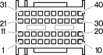

M10D Engine management ECU ( ENGINE )
- Path
- Electrical equipment > Connectors > M Intermittent and timed electronic devices,.. > M10 Engine management ECU > M10D Engine management ECU ( ENGINE )
- Kind
- connector pinout (pin -> wire colour -> other end)
- Applies to
- engines: 3.2 V6, 1.9 JTD 8v , 2.4 JTD 10v; production: da 03/99 a 01/00, da 02/01 a 02/02, da 03/02 a 09/03, da 10/03
- Interactive page
- https://sloeber94.github.io/elrnDB-a156/en/#/3236826
Applies to: engines: 3.2 V6, 1.9 JTD 8v , 2.4 JTD 10v; production: da 03/99 a 01/00, da 02/01 a 02/02, da 03/02 a 09/03, da 10/03

Wiring | Colour |
|---|---|
NERO (black) |
Pin | Cable | Destination | |||
|---|---|---|---|---|---|
Sec.. | Colour | Nodo | Connect. | Pin | |
SN (pink with black stripe) | |||||
RN (red with black stripe) | |||||
VN (green with black stripe) | |||||
H (grey) | |||||
HG (grey with yellow stripe) | |||||
A (light blue) | |||||
CN (orange with black stripe) | |||||
AR (light blue with red stripe) | |||||
HR (grey with red stripe) | |||||
L (blue) | |||||
BC (white with orange stripe) | |||||
G (yellow) | |||||
NZ (black with violet stripe) | SH | ||||
S (pink) | |||||
HM (grey with brown stripe) | |||||
C (orange) | |||||
G (yellow) | |||||
M (brown) | |||||
LN (blue with black stripe) | |||||
AB (light blue with white stripe) | |||||
MN (brown with black stripe) | |||||
LR (blue with red stripe) | |||||
N (black) | |||||